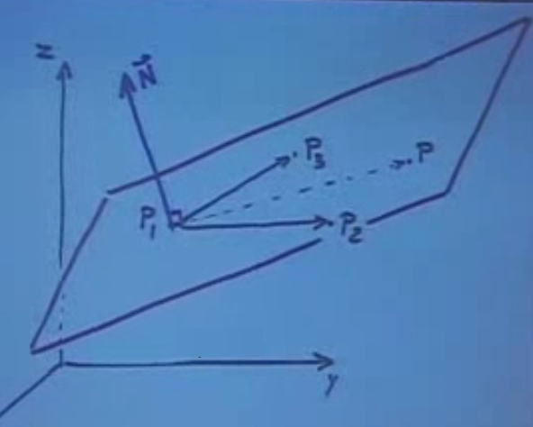
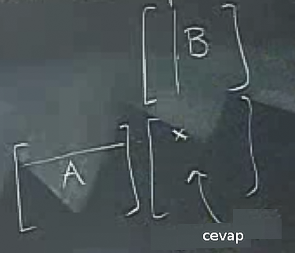
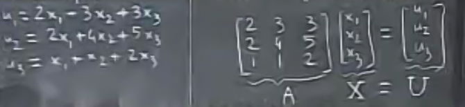

Çapraz çarpımlar hakkında bilinmesi gereken bazı şaşırtıcı gelebilecek kurallar var. Bunlardan bir tanesi \(\vec{A} \times \vec{B} \ne \vec{B} \times \vec{A}\) işlemi. Peki neden böyle? Bunu incelemenin yollarından bir tanesi geometrik olarak düşünmek. Sağ el kuralını düşünürsek, yönün neden farklı olabileceğini anlarız. İşaretler tam terstir, yani
\[ \vec{A} \times \vec{B} = - \vec{B}\times \vec{A} \]
Determinant açılımını da düşünürsek, ikinci terim eksi işareti taşır, ama çarpım sırası değişince eksi işaretinin yeri değişir.
Peki \(\vec{A} \times \vec{A}\) nedir? Çapraz çarpım alan hesabında önemli olduğuna göre ve \(\vec{A} \times \vec{A}\) bir paralelkenar oluşturamayacağına göre (ya da sıfır alanlı bir paralelkenar oluşturacağına göre) cevap sıfır, daha doğrusu sıfır “vektörü’’ (o vektörün büyüklüğü de tabii ki sıfır).
Uygulamalar
Diyelim ki bize uzayda üç nokta verildi, ve bu noktaları içeren bir düzlemin formülünü bulmamız gerekiyor. Üç nokta, üç boyutlu uzayda bir düzlem yaratmak için yeterli, bunu biliyoruz. Bunun için bir dördüncü nokta \(P\) hayal edelim ki bu noktanın öğeleri \(x,y,z\) olsun.
Şimdi düzlemi tanımlayalım. Şu şekilde 3 tane vektör yaratalım
Bu vektörlerin aynı düzlem üzerinde olması, aynı zamanda bu vektörlerin tanımladığı paralelyüz’ün hacimsiz olması demektir. Yani birisi üzerinden bastırıp onu dümdüz etmiştir sanki, sadece alanı kalmıştır.
Bunu matematiksel olarak ifade etmenin yolu şudur:
\[ det(\vec{P_1P},\vec{P_2P},\vec{P_3P}) = 0 \]
Gerçek uygulama bağlamında problem bize \(P_1,P_2,P_3\) sayılarını vermiş olurdu.Biz bu sayıları üstteki formüle yerleştirdiğimizde ise tanımsız olan sadece \(x,y,z\) kalırdı ve bu \(x,y,z\)’ler ile beraber elde edilecek formül bu noktaların tanımladığı alan olurdu.
Bu hesabı daha da hızlı yapmanın bir yolu var. Alttaki resmi düşünelim.

Düzlem üzerindeki iki vektöre dik bir \(\vec{N}\)’i nasıl hesaplayacağımızı biliyoruz (çarpraz çarpım ile). Ayrıca, \(x,y,z\) değişkenlerini içeren üçüncü bir vektör \(\vec{P_1P}\)’in aynı düzlemde olması demek, bu \(\vec{N}\) vektörüne dik olması demektir (\(\vec{N}\) “normal vektör’’ olarak isimlendirilir). Bunu matematiksel olarak nasıl ifade ederiz? Dikliğin matematiksel karşılığını biliyoruz, noktasal çarpım sıfır olmalı.
\[ \vec{P_1P} \cdot \vec{N} = 0 \]
\(\vec{N}\) hesabı için
\[ \vec{N} = \vec{P_1P_2} \times \vec{P_1P_3}\]
Bu kadar.
Ek not, eğer çapraz çarpımın sırasını değiştirmiş olsaydım, o zaman üstteki hesabın ters yönünde bir başka dik vektör elde ederdim, düzlem yine aynı olurdu, sadece başka bir normal vektör olurdu. Bu problem değil, herhangi bir düzlemin sonsuz sayıda normal vektörü olabilir. Elde ettiğimiz bir normal vektörü herhangi bir sabit ile çarpınca yeni bir normal vektör elde etmiş olurum çünkü.
\[ \vec{P_1P} \cdot \vec{N} = \vec{P_1P} \cdot (\vec{P_1P_2} \times \vec{P_1P_3}) \]
Eşitliğin sağındaki çarpıma üçlü çarpım (triple product) deniyor.
Eğer dikkat ettiyseniz, denklemin sağ tarafındaki çapraz çarpım işlemine tabi tutulan vektörler aynı düzlem içerisinde bulunduğu için, çapraz çarpımın sonucu bize bulundukları düzleme dik bir vektör verir. Bu vektör, denklemin sol tarafındaki \(\vec{N}\) ile aynı doğrultuda olduğu için bu eşitlik her zaman sağlanır.
Matrisler
\(AB\) şeklindeki bir matris çarpımında herhangi bir hücrenin, hangi kolon hangi satırın noktasal çarpımının sonucu olduğunu hayal edebilmek için alttaki şekil faydalı olabilir. \(AB\) çarpımını gerçekleştirdikten sonra ortaya çıkan matriste, herhangi bir hücreyi ele alalım. Mesela, beşinci satır, dördüncü kolon. Bu sayı, \(A\) matrisinin beşinci satırı ile, \(B\) matrisinin dordüncü kolonunun noktasal çarpımının sonucudur. İşte bu kadar basit.

Sezgisel olarak \(AB\) çarpımı neyi temsil eder? Bu çarpımı şöyle düşünebiliriz, önce \(B\) transformu yap, sonra \(A\) transformu yap. Bu biraz acaip gelebilir, çünkü normalde işlemleri soldan sağa yapmaya alışığızdır. Fakat \(AB\)’yi belki de sıralı fonksiyon işlemleri olarak görmek daha doğru olur, mesela \(f(g(x))\) gibi. Burada önce \(g\) uygulanır, sonra \(f\) uygulanır.
\[ (AB)X = A(BX) \]
Üstteki özelliğe birleşim özelliği diyoruz. Bu arada, üstteki çarpımın noktasal değil, matris çarpımı olduğuna dikkat edelim.
Not: \(AB \ne BA\). En azından sağdaki çarpımın olabileceğini beklemememiz gerekir. \(AB\) çarpımı boyutlar uyduğu için mümkün olmuştur, fakat bu uyumlu boyutlar yerler değişince belki mümkün olmaz. Boyutlar olsa bile sonuç farklı çıkabilir, o sebeple eşitlik farz edilemez. Ufak bir Python kodu ile test edelim:
a = [[2,3,4],[4,4,5],[9,3,2]]
b = [[2,3,9],[4,2,5],[9,3,2]]
print np.dot(a,b)
print np.dot(b,a)[[ 52 24 41]
[ 69 35 66]
[ 48 39 100]]
[[97 45 41]
[61 35 36]
[48 45 55]]Sonuçlar farklı çıkacak.
Örnek
Çevirmek / Rotasyon
Bir düzlem üzerinde bir vektörü \(90^o\), saat yönü tersine çevirmek için
\[ R = \left[\begin{array}{rr} 0 & -1 \\ 1 & 0 \end{array}\right] \]
İlginç bir durum
\[ R^2 = \left[\begin{array}{rr} -1 & 0 \\ 0 & -1 \end{array}\right] \]
Yani birim matrisinin negatifi. Niye böyle oldu? Düşünelim, eğer bir vektörü 90 derece döndürürsem, sonra bir daha 90 derece döndürürsem, sonuç olarak 180 derece döndürmüş olurum, yani tam tersi yöne gitmiş olurum. Birim matrisin negatifi de budur zaten.
Matrisler denklem sistemlerini temsil edebilirler, alttaki gibi

Bu tür sistemlerde belki \(X\) değerleri verilmiştir, \(U\)’yu hesaplamamız isteniyordur, ya da tam tersi de olabilir, \(U\) verilmiştir, \(X\) hesaplamamız isteniyordur. Ters yönde gitmek için matris tersini (inverse) almak gerekir.
Not: Bir matrisin tersini alabilmemiz için onun kare matrisi olması gerekir, yani boyutu \(n\) x \(n\) olmalıdır.
Ters yönde çözüme gelelim. Mesela elimizde şöyle bir sistem var
\[ AX = B\]
\[ A^{-1}(AX) = A^{-1}B\]
\[ X = A^{-1}B\]
Böylece \(X\)’i elde edebilmiş oluruz. O zaman \(A\) matrisinin tersini alma operasyonunu yapabiliyorsak, istediğimiz herhangi bir lineer denklem sistemini çözebiliriz demektir.
Aşağıdaki eşitlik de bir matrisin tersini bulabilmek adına geçerlidir.
\[ A^{-1} = \frac{1}{det(A)} = adj(A)\]
Üstte \(adj\) diye tanımlanan bir matrisin bitişiğini (adjoint matrix) nasıl buluruz?
Mesela
\[ \left[\begin{array}{rrr} 2 & 3 & 3 \\ 2 & 4 & 5 \\ 1 & 1 & 2 \end{array}\right] \]
Adımlar:
\[ \left[\begin{array}{rrr} 3 & -1 & -2 \\ 3 & 1 & -1 \\ 3 & 4 & 2 \end{array}\right] \]
\[ \begin{array}{rr} + - + - + \\ - + - + - \\ + - + - + \\ - + - + - \\ \end{array} \]
Örnekteki bitişiklik ise şu hale gelir:
\[ \left[\begin{array}{rrr} 3 & 1 & -2 \\ -3 & 1 & 1 \\ 3 & -4 & 2 \end{array}\right] \]
Satırlar ve kolonların yerini değiştir.
\[ \left[\begin{array}{rrr} 3 & -3 & 3 \\ 1 & 1 & -4 \\ -2 & 1 & 2 \end{array}\right] \]
\[ \left|\begin{array}{rrr} 2 & 3 & 3 \\ 2 & 4 & 5 \\ 1 & 1 & 2 \end{array}\right| = 3 \]
\[ A^{-1} = \frac{1}{3} \left[\begin{array}{rrr} 3 & -3 & 3 \\ 1 & 1 & -4 \\ -2 & 1 & 2 \end{array}\right] \]
Ekler
Bazı Çapraz Çarpım Kuralları [1, sf. 222]
BAC-CAB
`BAC-CAB açılımı’’ denen teknik soyle
\[ A \times (B \times C) = B(A \cdot C) - C(A \times B) \]
Dağılım (Distributive) Kuralı
\[ (A+B) \times C = (A \times C) + (B \times C) \]
\((A+B) \times (C+D)\) açılımı da üstteki açılımdan türetilebilir.
Yerbağımsızlık
Normal çarpma toplamadaki yerbağımsızlık yok, çünkü işaret değişiyor,
\[ B \times A = - A \times B \]
Kaynaklar
[1] Mathematical Methods for Physics Engineering